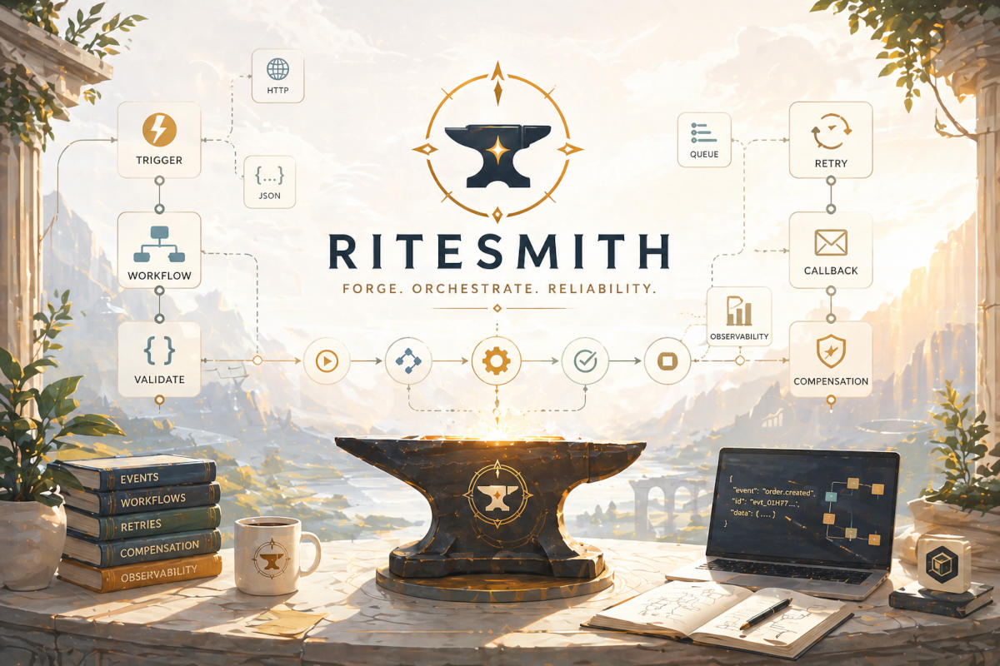

LLMs plan.
Code executes.
Most AI systems run inside the LLM loop — think, act, observe, repeat. The LLM is in the critical path for every step.
That makes execution non-deterministic, expensive, and impossible to audit.
RiteSmith breaks the loop: the LLM plans once, RiteSmith defines the system, and Trama executes it deterministically.
The LLM decides once. Execution no longer depends on it.
Generated systems are reusable
RiteSmith does not regenerate systems every time. It searches existing artifacts first and only generates when needed.
{
"intent": "process order refund",
"constraints": { "requires_approval": true }
}
[ "validate_request", "check_policy", "refund_payment", "notify_user" ]
{
"status": "completed",
"traceable": true,
"recoverable": true
}
The problem with pure AI agents
LLMs are powerful, but they are not execution engines. Putting them in the critical path of every step creates systems that are hard to reason about, expensive to run, and impossible to audit.
No system boundary
Execution is non-deterministic — the same input can take different paths every run.
No persistent record
State lives in prompts. There is no versioning, no artifacts, no audit trail.
LLM cost on every step
Logic is recomputed on every call instead of being generated once and reused.
Token cost tells the whole story
Both approaches complete the task successfully. The difference is what it costs. An LLM loop re-sends the full context on every API call — tokens compound. RiteSmith generates the workflow once; Trama runs it without touching the LLM again.
Planning is not execution
Ritesmith keeps the intelligence where it belongs: in planning. Execution remains deterministic, observable, and recoverable.
Pure LLM agents
Flexible, but unpredictable.
Static workflows
Reliable, but rigid.
Ritesmith
Adaptive planning with deterministic execution.
How Ritesmith works
The LLM submits an intent. RiteSmith generates the execution system. Trama runs it with retries, state, callbacks, compensation, and observability.
1. Intent
The LLM understands the goal and submits it to RiteSmith.
2. Generate
RiteSmith searches existing artifacts, generates missing Lua capabilities and workflow definitions, validates them under guardrails, and registers them in the artifact registry.
3. Execute
Trama runs the workflow with retries, state, sleep, callbacks, and observability. The LLM is no longer in the loop.
Powered by Trama
Ritesmith does not reinvent orchestration. It builds on top of Trama, a lightweight saga orchestrator for reliable distributed workflows.
What Trama provides
Durable workflow state, retries, compensation, callbacks, observability, and production-grade execution semantics.
The forge behind predictable AI systems
Ritesmith is built around a simple principle: intelligence should design the path, but reliable infrastructure should execute it.

Build predictable AI systems
Use LLMs where they shine: reasoning, planning, and adaptation. Keep execution reliable, auditable, and controlled.
Get started on GitHub